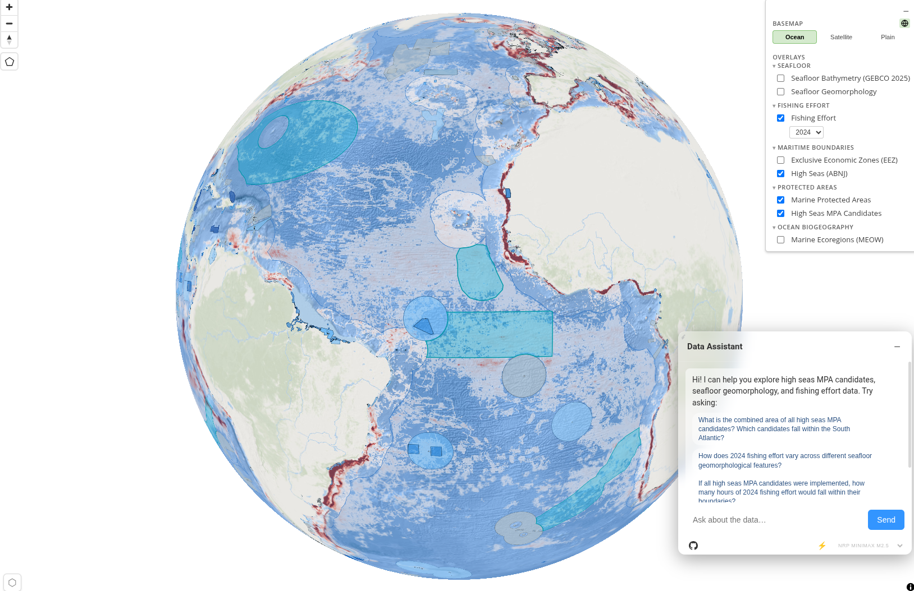
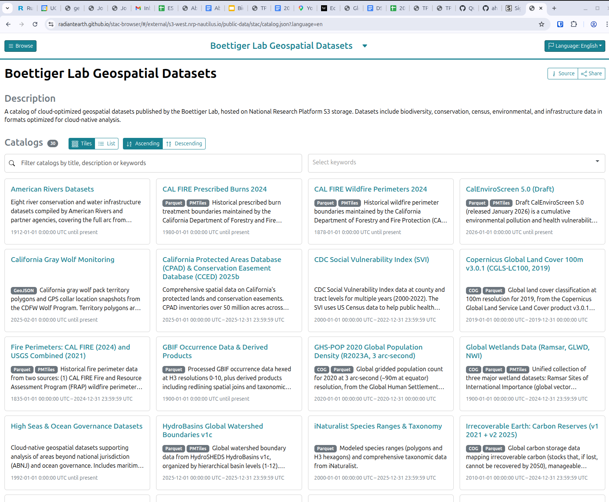

An LLM-Powered Geospatial Analysis Ecosystem
Carl Boettiger
UC Berkeley · boettiger-lab

{
"catalog": "https://stac.example.io/catalog.json",
"collections": [
"protected-areas",
{
"collection_id": "carbon-stocks",
"assets": [
"irrecoverable-total-2018-cog",
{ "id": "manageable-cog", "display_name": "Manageable Carbon" }
]
},
{
"collection_id": "watersheds",
"assets": [{
"id": "basins",
"versions": [
{ "label": "L3 – Major", "asset_id": "hydrobasins_l3" },
{ "label": "L6 – Fine", "asset_id": "hydrobasins_l6" }
]
}]
}
]
}Simple strings · Objects with overrides · Versioned assets with dropdown
From raw shapefiles to cloud-native formats
Every vector dataset produces all three. Rasters: COG + H3 hex.

cng-datasets CLI generates YAML · kubectl apply runs it
"Your laptop generates YAML. The cluster does the work."
h0=*/data_0.parquetOne grid. Any dataset. Any resolution.
ST_Intersection, ST_Union, ST_Area —
O(n²), complex, error-prone on bad geometry
Area = COUNT(DISTINCT cell_id) × cell_area
Replaces ST_* for area, join, intersection, buffer
All spatial ops become integer hash joins — O(n), no geometry library needed
dataset/hex/
h0=801fff.../data_0.parquet ← North America
h0=802fff.../data_0.parquet ← Europe
h0=803fff.../data_0.parquet ← Asia
...h0 = coarsest H3 cell = geographic region
-- "Show me California data"
-- DuckDB reads ONLY the h0 partitions
-- that overlap California
-- → skips 90%+ of S3 reads5–20× speedup on spatial queries
Every dataset gets a STAC collection with full schema metadata
{
"table:columns": [
{
"name": "gap_code",
"type": "int32",
"description": "GAP Status: 1=managed, 2=biodiversity, 3=multiple-use, 4=unprotected"
},
{
"name": "own_type",
"type": "utf8",
"description": "Owner type. Values: FED, STAT, LOC, JNT, TRIB, PVT, UNK, NGO"
}
]
}This metadata flows into the LLM's system prompt via
catalog.generatePromptCatalog()
"The better the metadata, the smarter the agent"
A universal SQL interface for LLMs
A standardized way for LLMs to call external tools
Not tied to geo-agent — any MCP-compatible client can connect
browse_stac_catalogget_stac_detailsquery(sql)register_hex_tiles-- Example: area of GAP 1+2 protected lands by state
SELECT state_name,
APPROX_COUNT_DISTINCT(h8) * 0.7373 AS area_km2
FROM read_parquet('s3://public-biodiversity/padus/hex/h0=*/data_0.parquet')
WHERE gap_code IN (1, 2)
GROUP BY state_name ORDER BY area_km2 DESC:memory: connection each requesth0 in joinsDISTINCT for vector overlapsGROUP BY + agg for raster pixelsget_stac_details firstSame DuckDB + STAC backend — different interaction surfaces
mcp-gpu-data-server: RAPIDS cuDF + kvikio S3 reads
| Query | Dataset | GPU (cuDF) | CPU (DuckDB) | Winner |
|---|---|---|---|---|
| Simple filter | IUCN (22M rows) | 14.1s | 9.0s | CPU 1.6× |
| 3-way join | IUCN | 19.7s | 11.1s | CPU 1.8× |
| Agg 28 partitions | Carbon (3.2 GiB) | 62.7s | 18.5s | CPU 3.4× |
| Cross-dataset | Carbon × IUCN | 60.9s | 27.8s | CPU 2.2× |
| Cross-dataset | Carbon × WDPA | 53.2s | 22.1s | CPU 2.4× |
kvikio reads S3 at 6.25 Gbps vs 0.97 Gbps (Polars) — but DuckDB still wins 2–4×
DuckDB leverages HTTP range requests, parquet row-group pruning, and dynamic partition pruning
to read only the bytes it needs — raw bandwidth can't compete with reading less data
geo-agent: modules, tools, and the agentic loop
Config → STAC → Map → MCP → Tools → Agent → UI
show_layer / hide_layerset_filter / clear_filter / reset_filterset_style / reset_stylefly_toget_map_statelist_datasets / get_dataset_detailsInstant · runs in browser
query(sql)browse_stac_catalogget_stac_detailsRequires approval · HTTP to MCP server
Loops until LLM responds with text (no tool calls) or hits max 20 iterations
Last 12 messages in context · Tool results capped at 4K chars
Turn-local messages: tool calls & results are ephemeral per turn
SELECT state_name,
APPROX_COUNT_DISTINCT(h8) * 0.7373 AS protected_km2,
total_km2,
ROUND(protected_km2 / total_km2 * 100, 1) AS pct
FROM read_parquet('s3://...')
WHERE gap_code IN (1, 2)
GROUP BY state_name
ORDER BY pct DESC LIMIT 10User sees the agent's reasoning + full SQL before execution
| What | Source | Hardcoded? |
|---|---|---|
| S3 data paths | Agent calls get_stac_details() | Never |
| Column schemas | STAC table:columns | Never |
| Map styles | layers-input.json defaults | Never |
| Filters | MapLibre expressions, dynamic | Never |
| LLM models | config.json (runtime injected) | Never |
| System prompt | STAC + MCP + app markdown | Never |
Add a dataset to STAC, reference it in config — the agent can query it immediately
Observability, logging, and continuous improvement
Every agentic turn is observable
user_questionmessage_counttool_results_this_turnmodel, origintimestamplatency_ms, tokenstool_calls (with full SQL)content_previewerror (if failed)request_id links pairs3://logs-biodiversity/2026-04-07/14-23-01-pid42.jsonl
s3://logs-biodiversity/2026-04-07/14-24-15-pid42.jsonl
...{
"type": "response",
"request_id": "abc-123",
"origin": "https://padus.nrp-nautilus.io",
"latency_ms": 2340,
"tokens": { "prompt": 4200, "completion": 380 },
"tool_calls": [
{ "name": "query", "arguments": "SELECT state_name, ..." }
],
"content_preview": "Here are the top 10 states by protected area..."
}Query logs with… DuckDB
SELECT * FROM read_ndjson_auto('s3://logs-biodiversity/2026-04-07/*.jsonl')
WHERE origin = 'https://padus.nrp-nautilus.io'Agent asked: "What fraction is GAP 1?"
Agent generates: WHERE gap_status = 1
Column doesn't exist → query fails
Logs show this pattern repeated across 12 sessions
Fix: Add column description to STAC metadata
{
"name": "gap_code",
"type": "int32",
"description": "GAP Status:
1=managed, 2=biodiversity..."
}Agent now uses WHERE gap_code = 1
Continuous — not one-shot. Every deployment generates training signal.
From one library to many apps
Merge to main → purge CDN cache → all apps updated instantly
Each app: static HTML. Different datasets, branding, prompts. Same core.
All patterns: zero JavaScript to write
boettiger-lab/geo-agent-templatelayers-input.json — pick your STAC collectionssystem-prompt.md — describe the AI persona| geo-agent | github.com/boettiger-lab/geo-agent |
| MCP server | github.com/boettiger-lab/mcp-data-server |
| Data workflows | github.com/boettiger-lab/data-workflows |
| LLM proxy | github.com/boettiger-lab/open-llm-proxy |
| App template | github.com/boettiger-lab/geo-agent-template |
| Docs | boettiger-lab.github.io/geo-agent |
Questions?